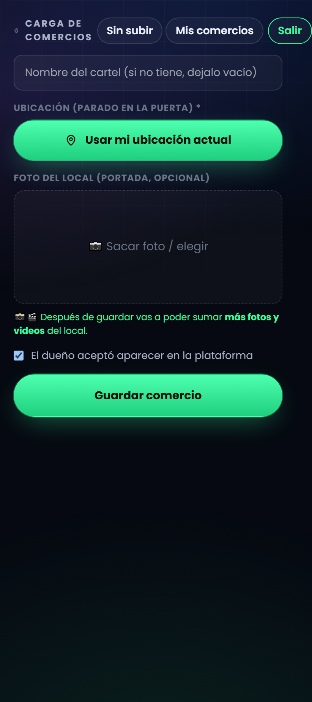
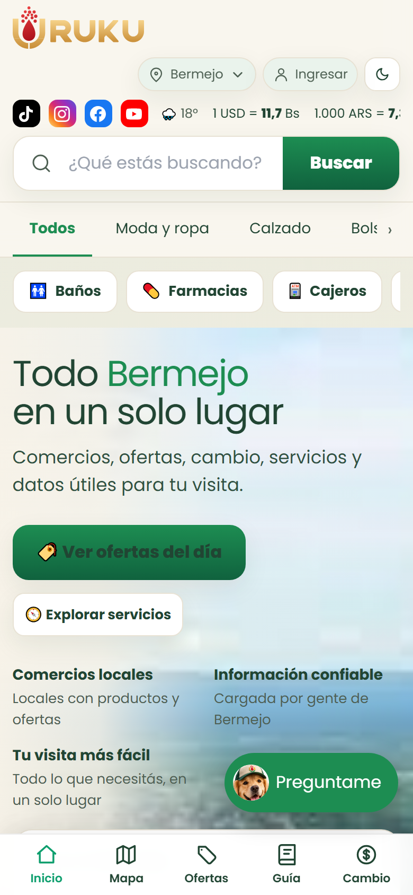
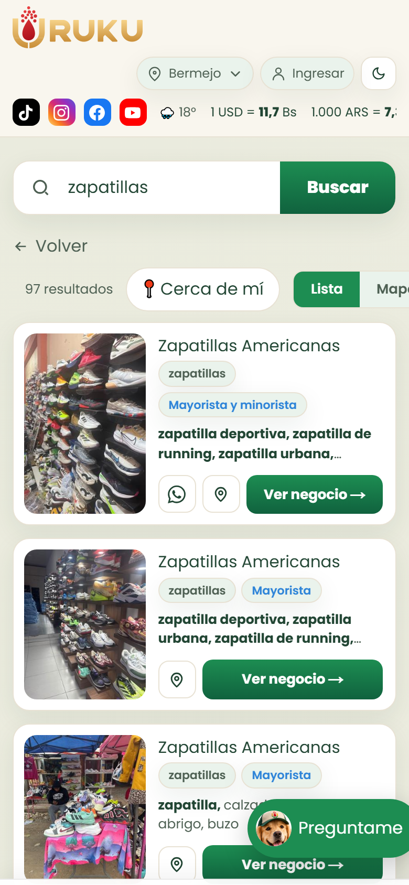
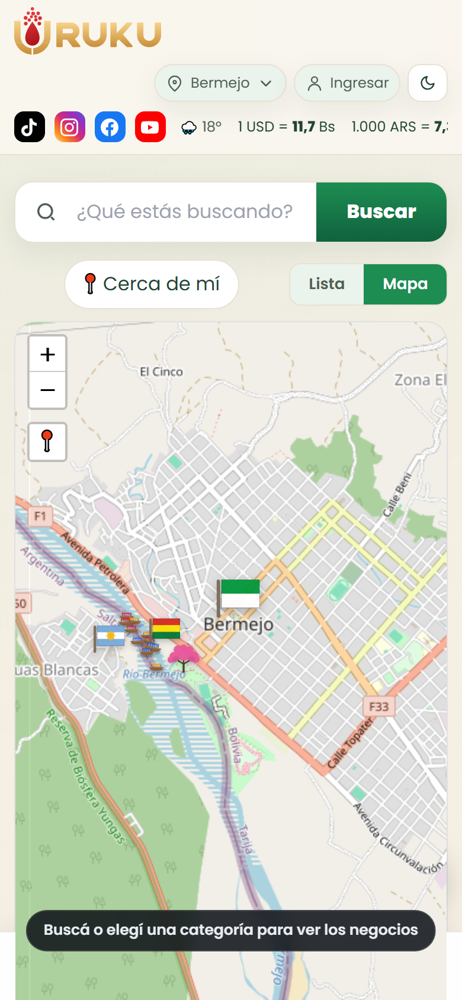

Tres cosas por comercio: foto, ubicación y nombre. Nada más
— cada uno te lleva menos de un minuto.
1 Entrar
Abrí uruku.bo/publicar en el celular.
Usuario: {{MAIL}}
Contraseña: la que te mandé por WhatsApp
Entrás una sola vez. Si el navegador te ofrece
«Agregar a pantalla de inicio», aceptá — se abre como una app.
La regla que más importa
Tomá la ubicación {{PARADO}} frente a cada local. Cuando hay muchos comercios pegados
uno al lado del otro, es lo único que permite distinguir cuál es cuál después.

2 Cargar
Nombre del cartel — tal cual lo diga.
Si no tiene cartel, dejalo vacío: URUKU le pone nombre solo. No inventes.
Usar mi ubicación actual — es lo único obligatorio.
La primera vez el celular pide permiso: dale que sí.
Foto del local — dice «opcional», pero
hoy es lo más importante.
El dueño aceptó aparecer — tildalo si hablaste con él.
3 Guardar y seguir
Después de guardar, la pantalla te ofrece cargar el WhatsApp, más
fotos y los datos del negocio. En estos primeros días no completes nada de eso: tocá
«Cargar otro comercio» y seguí caminando.
La foto es lo que después ubica el negocio
De frente y que se vea el local entero con lo que tenga alrededor: la puerta, el cartel, la
vereda. El que llegue después con el celular en la mano tiene que poder reconocerlo al pasar.
URUKU · {{CIUDAD}} · Hoja 1 de 4
URUKU · AGENTE DE CAMPO
Qué estás construyendo
URUKU es el directorio de los comercios de una ciudad: qué vende cada local,
dónde queda, a qué hora abre y cómo se le escribe.
{{CIUDAD}} arranca de cero, y eso lo armás vos.

La portadaLo primero que ve el comprador

La búsquedaBusca «zapatillas» y le aparecen los locales

El mapaCada punto es un negocio cargado
uruku.bo
Cada comercio que cargás es un punto más en ese mapa.
Sin foto no se reconoce, sin ubicación no se llega, y sin nombre no se busca. Por eso el
primer recorrido junta esas tres cosas y nada más: es lo único que no se puede conseguir
después por teléfono.
URUKU · {{CIUDAD}} · Hoja 2 de 4
URUKU · AGENTE DE CAMPO
Los primeros 10 días: llenar rápido
El objetivo es cubrir la ciudad. Todavía no se vende nada ni se le pide nada
a nadie: se carga, se observa y se anota.
Los rubros que cargamos
No hace falta seguir ningún orden: la lista está para saber
qué cuenta como comercio y que no se te pase nada.
Moda y ropa
Calzado
Supermercado y alimentos
Bazar y cocina
Juguetería, librería y escolar
Ferretería y construcción
Neumáticos y lubricantes
Electrodomésticos
Farmacia y salud
Perfumería y belleza
Lencería y ropa interior
Celulares y accesorios
Restaurantes
Cambio de moneda
Kiosco y golosinas
TV, audio y electrónica
Bebidas
Bolsos y accesorios
Blanquería y textil
Taller mecánico
Motos y accesorios
Muebles y colchones
Bicicletas
Hospedaje
Regalería y cotillón
Joyería y relojes
Carnicería y pollería
Marroquinería y equipaje
Repuestos para autos
Gomería
Café, heladería y postres
Peluquería y barbería
Óptica
Carpintería a medida
Deportes y fitness
Bares y karaoke
Gimnasios y canchas
Lavadero
Mascotas
Herrería y metalúrgica
Tecnología y computación
Rotisería y comida rápida
Bebés y niños
Envíos y encomiendas
Estación de servicio
Panadería
Funeraria
Artículos de limpieza
Telas y mercería
Florería
Y lo que no es un comercio pero la gente busca igual Baños públicos, farmacias de turno, cajeros, estacionamientos, wifi
gratis y la policía. Los baños públicos están siempre entre lo más buscado del sitio.
Cargalos igual que un comercio: foto, ubicación y nombre.
Mientras caminás, mirá tres cosas
1
Cómo hacen para vender. ¿Tienen cartel con
Instagram o WhatsApp? ¿Reparten volantes? ¿Tienen catálogo? ¿Venden sólo en el local o también
mandan? Eso define qué les vamos a ofrecer después.
2
Quién les compra. ¿Sólo gente de {{CIUDAD}}?
¿Viene gente del interior, de otros departamentos, del exterior? Preguntale a dos o tres por
cuadra y anotá lo que te digan.
3
Quiénes son los mejores. Los mayoristas más
fuertes de {{CIUDAD}} y los minoristas más conocidos. Preguntá: «¿a quién le compra la
gente acá?». Esos son los que hay que tener sí o sí.
Los horarios: no los cargues de a uno
Preguntale el horario a dos o tres locales de la cuadra — en una misma zona casi
todos abren parecido. Al terminar la zona, o al final del día, mandámelo por WhatsApp:
«calle tal, de 8 a 12 y de 15 a 19». Yo lo cargo a todos de una vez.
URUKU · {{CIUDAD}} · Hoja 3 de 4
URUKU · AGENTE DE CAMPO
Después del día 10: la segunda pasada
Es un recorrido distinto. Ya no se carga: ahora se habla, se muestra y se
ofrece. Y se vuelve a las mismas cuadras.
Ahora tenés algo para mostrar.
Entrás al local, abrís el celular y le mostrás su propio negocio ya cargado en URUKU.
Ésa es la conversación: no le estás vendiendo que cree algo, le estás mostrando algo suyo que
ya existe.
Las tres tareas de este recorrido
1 · SuscripcionesQue el comercio se sume. Es gratis para estar en
el mapa; después hay planes con más cosas.
2 · CompradoresContarle a la gente que URUKU existe y que ahí
encuentran lo que buscan.
3 · Ofertas y novedadesJuntar lo que los comercios quieran
publicar — siempre con su permiso.
La oferta es el gancho de la suscripción
Cuando le publicás una oferta y se la mostrás andando, la suscripción se explica sola. Por eso
la tarea 3 no es un extra: es la que hace funcionar a la 1.
Qué preguntar y qué mostrar
¿Cómo vende hoy? — retomá lo que viste en el primer recorrido.
¿Tiene redes? Instagram, Facebook, TikTok, un catálogo por WhatsApp. Anotalo:
todo eso va en su ficha.
Mostrale su ficha y lo que le falta: el horario, el WhatsApp, las fotos de lo que
vende. Completalo ahí mismo con él.
Explicale que estar es gratis, y que después hay planes con más cosas. No arranques
por el precio: arrancá por lo que ya tiene cargado.
Nunca prometas que le vas a traer clientes.
No lo controlamos. Lo que sí podés decir: «en un mes vuelvo y le muestro cuánta gente
miró su local y cuántos le apretaron el WhatsApp». Eso sí depende de nosotros, y
cumplirlo vale más que cualquier promesa.
Si algo no sale
El local está cerrado → cargalo igual, con foto y ubicación.
No tenés señal → cargá igual. Queda guardado en el celular y se sube solo cuando
vuelva la señal. El botón «Sin subir» de arriba te dice cuántos quedan.
No toma la ubicación → salí a la vereda, lejos de paredes, y probá de nuevo.
No quiere aparecer → no insistas y no lo cargues. Anotá el nombre.
Cualquier duda → escribime por WhatsApp. Si es sobre un comercio, mandame la foto.